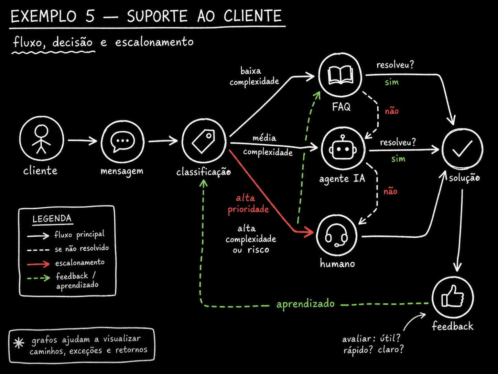

🏛️ Separe o organograma do trabalho
Dois grafos convivem no mesmo sistema de agentes, e eles nao sao o mesmo grafo. O org graph e a estrutura que fica: agentes de vida longa com papeis nomeados — pesquisador, escritor, validador, publicador — cada um dono de um dominio, com memoria acumulada e arestas estaveis que so mudam quando voce redeploya o sistema.
Pense nele como o organograma da empresa, so que cada caixa e um agente rodando o proprio loop. O org graph responde "quem existe e o que cada um faz" — nao "o que estamos fazendo agora". Essa segunda pergunta e outro grafo, que voce ve no proximo topico.
🆕 Novo aqui? Quatro palavras antes de seguir
- Org graph: a estrutura estavel de agentes de vida longa — o organograma. So muda quando voce reimplanta o sistema.
- Work graph: o grafo montado para uma tarefa especifica. Nasce, roda, e e descartado.
- Redeploy: reimplantar — publicar uma nova versao do sistema no ar. E o unico momento em que o org graph muda de forma.
- Determinístico: mesmo input, sempre o mesmo output. O oposto de "depende da sorte do modelo naquele dia".
O que olhar: a divisoria pontilhada no meio nao separa dois sistemas — separa duas perspectivas do mesmo sistema. Repare que "pesquisador" e "validador" aparecem dos dois lados: sao os mesmos agentes. A esquerda, voce ve todas as relacoes possiveis entre eles (o organograma). A direita, voce ve so o caminho fino que esta tarefa de hoje realmente percorreu — um subconjunto, montado na hora.
✓ E org graph quando
- ✓O agente tem nome e papel fixo, nao muda de tarefa em tarefa
- ✓Ele acumula memoria — sabe coisas que aprendeu em execucoes passadas
- ✓A aresta representa "pode pedir a" — uma relacao de longo prazo
✗ Nao e org graph quando
- ✗Voce esta desenhando os passos de uma tarefa unica — isso e work graph
- ✗A "estrutura" muda toda vez que chega um pedido diferente
- ✗Nao ha memoria acumulada, so contexto daquela execucao
Conceitos-chave
O organograma, estavel
Agente com papel nomeado
Aprende entre execucoes
Nao muda em runtime
📋 Monte o work graph do pedido de hoje
O work graph e efemero: montado pra uma tarefa especifica e descartado depois. Ele muda a cada execucao — hoje pede pesquisador e validador, amanha pede so o escritor, depois pede os quatro em fila. Nao existe "o" work graph do sistema; existe um work graph novo pra cada pedido que chega.
💡 A confusao mais comum de sistema bagunçado
Confundir os dois grafos e a causa mais comum de sistema bagunçado. Tem gente que recria a organizacao inteira a cada requisicao — instancia agente novo, redefine papeis, redesenha a estrutura toda vez que chega um pedido. E tem gente que faz o oposto: engessa a tarefa dentro do organograma, tratando cada variacao de pedido como se precisasse virar um agente novo e permanente.
- •Recriar a organizacao a cada pedido = caro, lento, e voce perde a memoria acumulada que fazia o agente ser bom.
- •Engessar a tarefa no organograma = o sistema fica rigido, incapaz de atender um pedido que nao seguiu o roteiro previsto.
Pedido chega
Um usuario ou sistema externo dispara uma tarefa. O work graph ainda nao existe.
Roteador escolhe quem participa
Olha o org graph disponivel e seleciona um subconjunto de agentes para essa tarefa especifica.
Work graph roda e termina
O caminho fino da tarefa e executado do inicio ao fim, entrega o resultado, e e descartado.
Org graph permanece intacto
Os agentes que participaram continuam existindo, prontos pro proximo work graph — com a memoria que acumularam.
Conceitos-chave
Efemero, um por pedido
Nasce, roda, some
Usa so parte do org graph
Confundir com o organograma
🛡️ Aplique zone defense
Zone defense e o padrao que faz o org graph valer a pena: cada agente dono de um dominio, com contexto persistente. O de seguranca cuida de autenticacao, permissoes e logs de auditoria. O de dados cuida de esquema, migracoes e padroes de query. O de API cuida de endpoints, limites de taxa e contratos. O de frontend cuida de componentes, estado e padroes de interface.
Cada um roda o proprio loop dentro da zona. Um pedido de uma zona pra outra passa pelo work graph — nunca direto. Nenhum agente vaza pro contexto do outro. E isso que faz o agente de vida longa acumular valor de verdade: um agente de seguranca que ja revisou 300 mudancas conhece o modelo de ameaca daquele codigo de forma implicita, sem precisar reexplicar nada a cada pedido.
📊 As quatro zonas classicas
- Seguranca — autenticacao, permissoes, logs de auditoria
- Dados — esquema, migracoes, padroes de query
- API — endpoints, limites de taxa, contratos
- Frontend — componentes, estado, padroes de interface
🆕 Novo aqui? Zone defense
Zone defense: termo emprestado do esporte — cada jogador cobre uma area do campo, nao uma pessoa especifica do time adversario. Em graph engineering, cada agente cobre um dominio do sistema, nao uma tarefa especifica. Ele defende a zona inteira, tarefa apos tarefa.
✓ Zone defense funciona quando
- ✓O dominio tem fronteira clara (dados nao e API, API nao e frontend)
- ✓Passagens entre zonas viram uma aresta explicita no work graph
- ✓Cada agente acumula contexto real (historico de decisoes, nao so instrucao)
✗ Zone defense quebra quando
- ✗Um agente le ou escreve direto no contexto de outra zona (vazamento)
- ✗As zonas se sobrepoem — dois agentes "donos" do mesmo dominio
- ✗Uma zona fica sem dono e vira terra de ninguem
Conceitos-chave
Um dono por dominio
Nao reseta a cada tarefa
Passagem = aresta explicita
Experiencia acumulada conta
🔀 Faca fan-out e fan-in de verdade
Fan-out e abrir uma tarefa em N ramos que rodam ao mesmo tempo. Fan-in e juntar os N resultados de volta num so. E o movimento que um loop simplesmente nao faz, por ser sequencial de forma — um loop processa uma coisa de cada vez, sempre.
A juncao e onde mora o perigo. Um merge malfeito engole um ramo em silencio, e o resultado parece completo mesmo faltando pedaco. Por isso toda juncao precisa conferir cardinalidade: recebi os N que despachei?
🆕 Novo aqui? Fan-out, fan-in, cardinalidade
- Fan-out: um no despacha trabalho para varios ramos paralelos ao mesmo tempo.
- Fan-in: os ramos paralelos convergem de volta para um unico no de juncao.
- Cardinalidade: a contagem — quantos itens saíram versus quantos voltaram. Se despachou 5 e recebeu 4, a cardinalidade nao bate.
O que olhar: quatro ramos pulsando chegam limpos na juncao; o quinto, marcado com X vermelho, nunca chega. Se a juncao nao contar quantos ramos despachou versus quantos recebeu, ela vai aceitar "recebi 4 de 5" como se fosse um resultado completo. Isso e o merge que engole uma fonte — o resultado parece pronto e ninguem percebe que faltou um pedaco.
⚠️ Atencao: juncao sem checagem de cardinalidade
Toda vez que voce escreve um fan-in, pergunte explicitamente "quantos eu esperava?" antes de seguir. Se a resposta nao bate com o que chegou, pare e trate o caso — nao deixe o work graph seguir como se estivesse completo. Um ramo que falhou em silencio e pior que um ramo que falhou gritando.
Conceitos-chave
Um no vira N ramos
N ramos viram um no
Recebi os N que despachei?
Merge que engole em silencio
🚦 Roteie por condicao
No roteamento por condicao, a aresta escolhe o destino a partir do resultado do no anterior. E o mecanismo que faz o work graph "decidir" sem um agente ter que interpretar tudo de novo a cada passo. O exemplo classico e o suporte ao cliente.
Complexidade baixa vai pra base de respostas prontas (FAQ). Complexidade media vai pro agente de IA. Complexidade alta ou arriscada escalona direto pro humano. Existem ainda a aresta de "nao resolveu" (devolve pro proximo nivel) e a aresta de aprendizado (volta pro classificador com o feedback).

🎯 Por que a aresta de aprendizado importa mais que parece
As tres primeiras arestas (principal, se-nao-resolvido, escalonamento) fazem o sistema funcionar hoje. So a aresta verde faz o sistema funcionar melhor amanha — porque ela e a unica que devolve informacao pro no que decide. Sem ela, o classificador erra do mesmo jeito pra sempre; com ela, cada correcao humana vira sinal pro proximo roteamento.
Conceitos-chave
Aresta escolhe pelo resultado
Alto risco vai direto ao humano
Sobe pro proximo nivel
Unica aresta que fecha ciclo
⚙️ Deixe codigo decidir o que e previsivel
Modelo roteando o que um if resolve e caro, lento e nao determinístico.
A divisao que funciona: codigo controla o roteamento previsivel; modelo cuida dos passos que exigem interpretacao
ou julgamento. Cada aresta que voce consegue transformar em regra escrita e uma aresta que para de custar token
e de variar entre execucoes.
✓ Deixe pro codigo
- ✓"Se complexidade == baixa, vai pra FAQ" — regra explicita, sem ambiguidade
- ✓"Se cardinalidade nao bate, para e alerta" — checagem mecânica
- ✓"Se categoria == pagamento, vai pro agente financeiro" — mapeamento fixo
✗ Deixe pro modelo
- ✗"O tom da mensagem sugere frustracao?" — exige leitura, nao regra
- ✗"Essa resposta responde de verdade a pergunta?" — julgamento de qualidade
- ✗"Qual e a intencao real por tras dessa frase ambigua?" — interpretacao
🧪 Exemplo pratico: grafo de roteamento de suporte em JSON
Objetivo: escrever o grafo de roteamento do suporte com arestas condicionais explicitas, aresta de escalonamento, de nao-resolvido, de aprendizado — e uma juncao que confere cardinalidade. Roda no console do navegador (F12 → Console) ou no Node.
// 1) O grafo de roteamento: cada aresta tem uma condicao explicita
const roteador = {
"classificacao": [
{ "para": "faq", "quando": "complexidade == 'baixa'" },
{ "para": "agente_ia", "quando": "complexidade == 'media'" },
{ "para": "humano", "quando": "complexidade == 'alta' || risco == 'alto'" }
],
"faq": [ { "para": "agente_ia", "quando": "resolvido == false" } ],
"agente_ia": [ { "para": "humano", "quando": "resolvido == false" } ],
"humano": [ { "para": "classificacao", "quando": "feedback_dado == true", "tipo": "aprendizado" } ]
};
// 2) Juncao com checagem de cardinalidade (fan-in de N tickets em lote)
function fanIn(despachados, recebidos) {
if (recebidos.length !== despachados.length) {
throw new Error(`cardinalidade nao bate: recebi ${recebidos.length} de ${despachados.length}`);
}
return recebidos;
}
// 3) Rota um ticket de exemplo
function roteia(no, ctx) {
const arestas = roteador[no] || [];
for (const a of arestas) {
// avaliacao simplificada da condicao 'quando' contra o contexto
if (eval(a.quando.replace(/complexidade/g, `'${ctx.complexidade}'`).replace(/risco/g, `'${ctx.risco}'`).replace(/resolvido/g, ctx.resolvido).replace(/feedback_dado/g, ctx.feedback_dado))) {
return a.para;
}
}
return null; // nenhuma condicao casou -- pedido some, ver "como verificar"
}
console.log(roteia("classificacao", { complexidade: "media", risco: "baixo" })); // "agente_ia"
Como verificar:
- 1. Toda aresta que sai de um no de decisao (
classificacao) temquando— nenhuma aresta "muda" sem condicao escrita. - 2. As condicoes cobrem todos os casos — teste
roteia("classificacao", <contexto sem match>); se retornarnull, existe uma entrada que nao casa com nenhuma condicao e o pedido some em silencio. - 3. Existe caminho ate o humano a partir de qualquer no — siga as arestas de
faqeagente_iae confirme que ambas chegam emhumanoquandoresolvido == false.
Agora troque pelo seu: substitua os nos por
<etapas do seu suporte> e as condicoes por
<campos reais do seu ticket>. Rode o teste do item 2 antes de subir pra producao.
Checagem rapida (nao bloqueia nada): um fan-in recebeu 3 respostas de um fan-out que despachou 5 ramos, e seguiu como se estivesse completo. Qual foi o erro?
Conceitos-chave
O que e regra, vira `if`
O que exige interpretacao
Toda entrada tem destino
Regra escrita nao gasta token
📌 Resumo do Modulo
Proximo Modulo:
4.3 — Falhas, harness e observabilidade: merge que engole fonte, roteamento que nao converge, monitor de quem rodou o que.